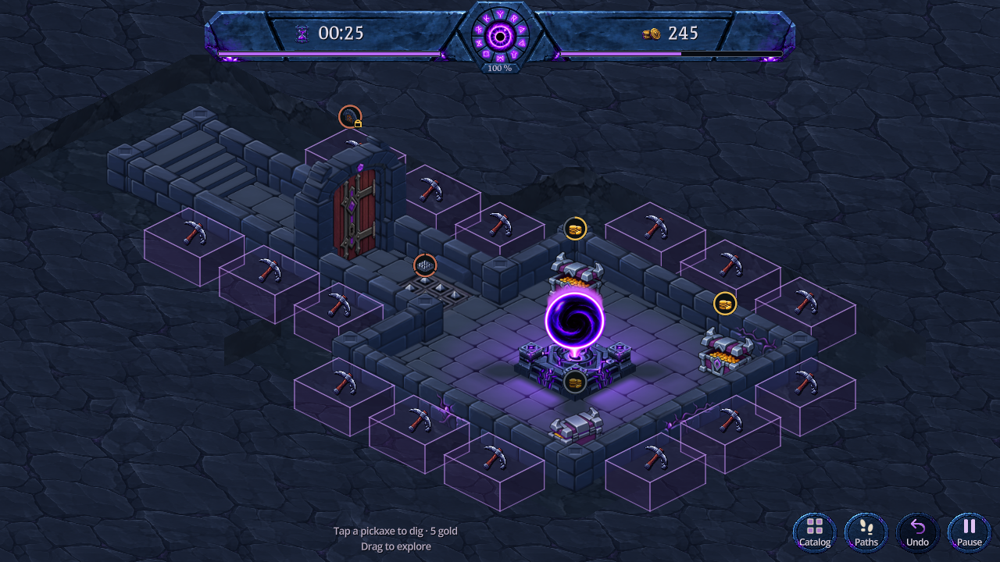
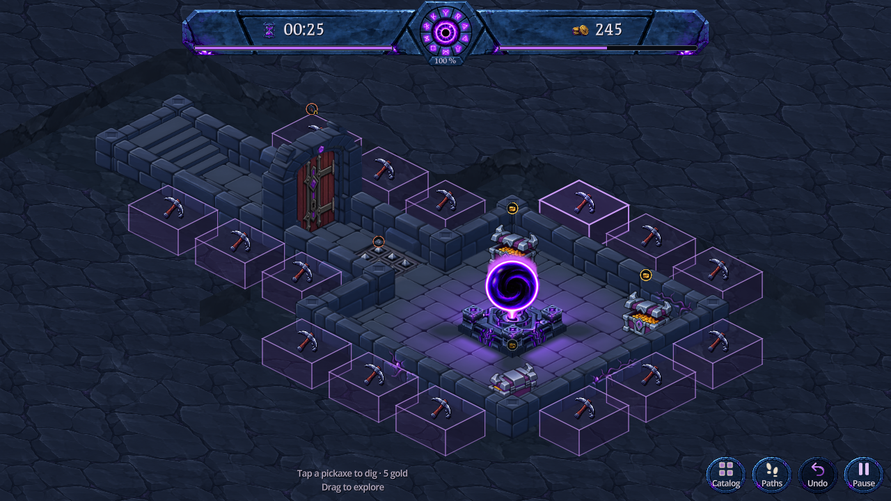
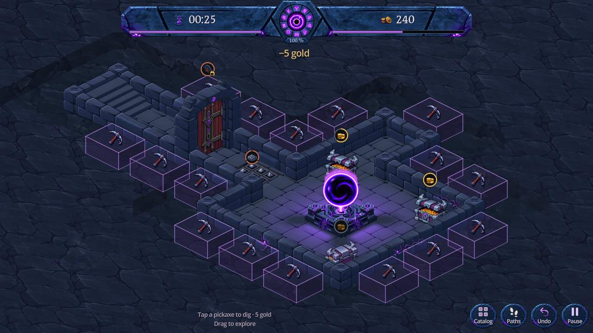

Chaque case creusable est délimitée par un volume isométrique à trois faces, à la hauteur des murs. La pioche reste sur le dessus. Le dessus et les côtés visibles sont cliquables pour creuser directement à 5 pièces ; un glissement déplace toujours la vue.

Capture Godot · 1280 × 720 · Volumes à creuser


Aperçu isolé dans DigBlocksPreview.tscn, sans sauvegarde joueur. Le jeu principal garde son affichage actuel. Le marquage disparaît quand le creusement est indisponible ; le terrain reste présent.
Le marquage suit le volume du sol jusqu’à la hauteur native des murs. Deux faces latérales teintées et les arêtes visibles rendent la profondeur lisible. La roche continue et la pioche sont réutilisées à l’identique ; aucun nouveau fichier de texture. Le terrain reste présent lorsque les actions sont masquées. Le dégagement original de 0,90 case autour du donjon est conservé, avec les mêmes teintes de fond et de parois. Les cubes sont des repères transparents et ne remplissent pas cet espace.
247 vérifications natives réussies : présence du terrain, hauteur, appui, déplacement, coût, manque d'or, retrait et restauration de la roche. Le test exerce un appui tactile réel sur une face latérale, le coût unique de 5 pièces et l’annulation. Bureau, paysage et portrait inspectés ; pas de validation sur téléphone physique.
Peinture produite avec ImageGen intégré : source, consigne, préparation et empreinte. Texture de 396 754 octets PNG, 1 Mio RGBA, partagée par tout le terrain. Reproduction : node tools/prepare_dig_terrain.cjs, import Godot, puis godot --path . --script res://tools/capture_dig_blocks.gd.